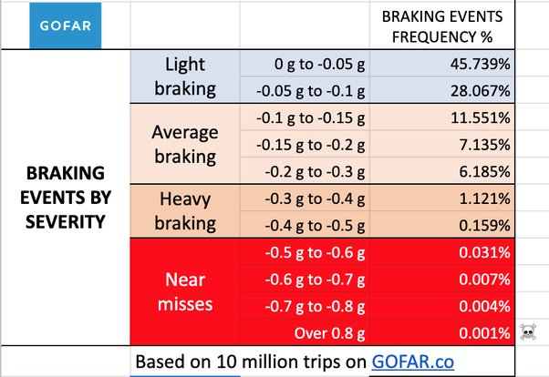
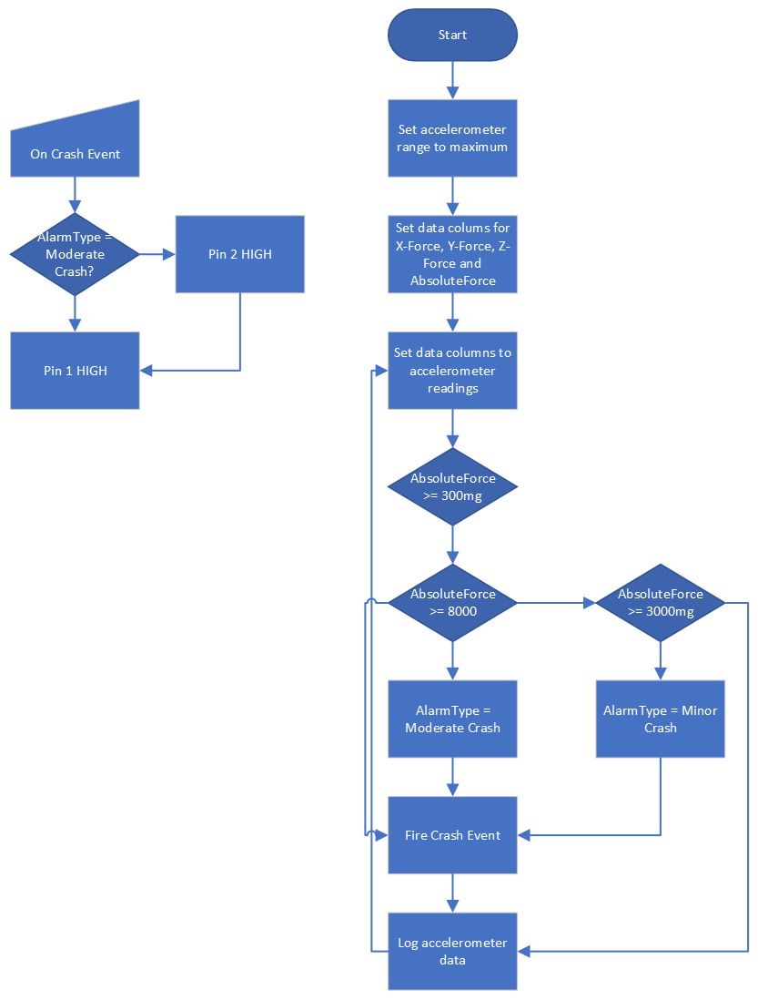
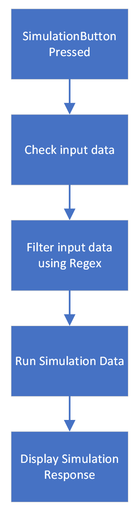
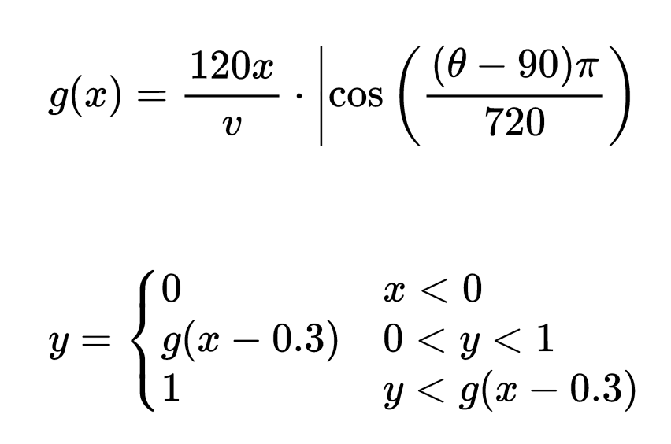
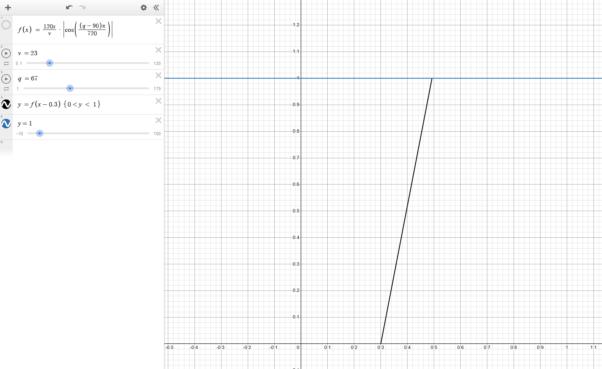
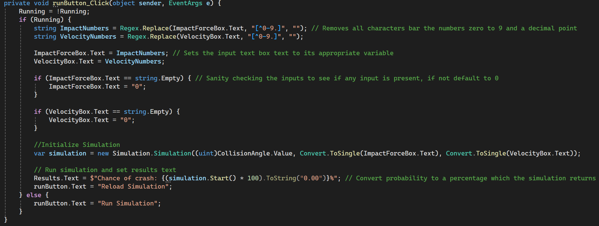

Upon reading the requirements in the brief, I began thinking of ideas. One of the first that came to mind would be car crash detection,
as I had seen the recent developments in crash avoidance in Tesla cars. With the idea of these cars with cameras in mind, I began to think of a project regarding car crashes.
I would then investigate driving data from cars and the expected bounds within which they should operate.
To do this, I looked at GoFar's data (see below) to get some expected conditions for driving.

Upon researching car crashes more, I realised they all had three things that could help me standardise an output and see if a crash occurred.
The G-force of the crash, the angle at which the impact occurred, and the speed at which the car was travelling.
I talked to a director of data-enabled businesses in Cork to find out more about what could be useful for companies wanting to use a product such as this.
When I went into this project, I realised there were two main customers.
Consumers and enterprises I went for Enterprise as I believed it would be a more interesting market to try to gain access to; through this, the product would have to be modular instead of being a static,
unexpandable project.
Through my research, I learned to use tools such as Desmos, the online graphing calculator,
to test my equations for my model and Winforms to create a UI.
My first objective would be to make the user interface for the advanced requirements model. After this I would aim to interact with the UI through code.
Once completed I would start on my embedded system, by creating a small battery holder and then programming the BBC Micro:bit to begin reading the accelerometer readings.
Once this was completed, I began forming equations that followed the data I found during my research.
To plan this project I would create flowcharts using Visio which is part of the Microsoft Office suite of software.
The first flowchart I would create would be for my embedded system. When creating this system I kept in mind ease of use and how it had to be modular if integrated in a bigger product,
as such I knew I would have to take advantage of the digital output ports on the Micro:bit.
With these ports the other developer working with my system would be able to add on their own modules such as their own SOS system,
or if the car has cameras, save a video recording of events leading up to the collision.

After creating this flowchart I moved on to creating the flowchart for my model which is below.

Upon the completion of the embedded system and wrapper for the model I would start on the design for the computer model's user interface. This would prove to be the longest part of the project.
Over two weeks I would develop the equations I used until I got my final equation that gave an accurate approximation of what my research data gave me.


When making this project I used a waterfall design approach as I believed it fit my working style better.
This design will meet my objectives as it aids in predicting the users current wellbeing, and as such meets the brief. The plan I have shown will aid me in getting to my end goal of completing this product
so it can be submitted as this project.
Week 1: Began work on the investigation to gather different project ideas.
Week 2: Conducted an interview with a Director of a company regarding the idea of car crash detection.
Week 3: Began creating flowcharts for the different stages of the project.
Week 4: Flowcharts concluded, began thinking up a UI design.
Week 5: Began writing up investigations section of report, first draft of the user interface for the model created.
Week 6: Mocks
Week 7: Mocks
Week 8: Model UI revised.
Week 9: First draft of model created.
Week 10: Second revision of the embedded system made. Model revised.
Week 11: Model revised further, plan and design section of brief concluded.
Week 12: Model proven out, report finalised and documentation made.
Through this creation cycle, unit tests were used a lot on the model as it was the only section that would have a practical need for a unit test. This test can be found in the Unit_Test folder. This unit testing aimed to see if the simulation was giving out an accurate response by checking one value which had been manually proven out, if it did not recreate this same value it would fail the test.
During the process of creating this project I encountered many problems. My first problem was that I did not know how to make a UI using Winforms. As a result I learned a new technology to create my project. Winforms ended up being one of the best things I got out of this project as I got to use it elsewhere. I also faced issues when it came to filtering the inputs for the model. To do this I would need to use Regex (Regular Expressions) to filter all the inputs. Even just near the end of this project, I faced issues with Visual Studio randomly destroying my unit test which had to be resolved by removing the test entirely and reimplementing it.
When making this project I had certain bits of code which I was quite proud of, particularly my code for processing the input data and subsequently running the simulation. This code was cleanly made, and works particularly well using a variety of different techniques such as Object Oriented Programming.
I was successful in achieving the aims of my project. I managed to aid user wellbeing by giving an easy to modify system to a developer looking to implement this in any of their products.
This can then be used to activate systems such as SOS callout and imaging devices on the car based on what the board classified the impact as. This basic requirement was met as all the GForce
data from the board was also logged using the datalogger built in with the Micro:bit. With this I managed to create a csv file of the data coming off the board when it was at rest.
This embedded system subsequently improved user wellbeing as it could get emergency services to them a lot quicker and alleviate stress knowing that they have proof for their insurance of
the person who collided with them.
I also met my second objective when developing this project as I was able to create a computer model to simulate an impact with three variables, the impact angle, the collision force in G,
and the velocity at which the car was moving at prior to the impact. Using these I made a piecewise function which took in all the input data and would give a probability of an impact.
I would then create a UI for this model which would evaluate the different input data and convert it to its correct format. This could then be used to feed into the model.
I could further improve on this model by making the equation more accurate which the model feeds off of. I was limited mostly by my lack of mathematical knowledge and knowledge of physics
which could aid me greatly if I improved on it more. If I was to go back on this project again I would also improve upon the interface for the model and perhaps add more input data.
Tools used for development
https://makecode.microbit.org/ -- Editor for the Micro:bit
https://visualstudio.microsoft.com/ -- IDE for Winforms and C# code and Python development
https://code.visualstudio.com/ -- Text editor (definition by Microsoft) used for Python development
https://github.com/Bocksa/CS-2024 -- Github repo used to track progress
Resources used to help with issues
https://learn.microsoft.com/en-us/dotnet/desktop/winforms/overview/?view=netdesktop-8.0 -- Learning to use Winforms
https://learn.microsoft.com/en-us/dotnet/api/system.windows.forms.trackbar?view=windowsdesktop-8.0 -- TrackBar class details
Resources used to help with mathematical development
https://www.desmos.com/calculator
https://www.justinmath.com/piecewise-functions/
https://www.desmos.com/calculator/3zabdb3vgt
https://www.overleaf.com/
https://latexeditor.lagrida.com/
Resources used for creation of the model
https://www.quora.com/How-many-Gs-do-we-feel-driving-a-car
https://www.quora.com/How-much-g-force-does-a-normal-car-have?top_ans=326045244
https://copradar.com/chapts/references/acceleration.html
https://www.drive.com.au/news/deflated-expectations-20100331-refb/
yMIJAnicAb0CQv3EDQMACgGMNqxD/Pm2OwHLjXUAZepB1FRoaXMgcHJvamVjdCB3 YXMgbWFkZSBieSBDaWFuIE1jTmFtYXJhIDE0MTE5MCwgc2lnbmVkIDIyOjM2IHdp dGggQmVuankgU3VnaXlhbWEgKGJzdWdpeWFtYUB2YXZlc3R1ZGlvcy5jb20pIGFz IHdpdG5lc3MgdG8gdGhpcyBzaWduaW5nLsLBXAQAAQoABgUCZepB1AAKCRCMNqxD /Pm2O7qHEACuZxTXSUGGDdHvkrhAwEpmAyKu+lMAPyrXG/UmZ5tForLP+s3xL1cC y2alpapga9LW6lDKusSQWlR/KrOgGXv1EqN59Nb2GT7/tc6rkc30RW2Gw3j2DAkL l0ZTA1Hmb2LdSnoZA9PsqPazHHoNuCHmwrBbdfOy8W6bboGNjQ8RfDoAWTBxP/k/ 2rez8Aju+M1kANZOppIy4TAuViTd7RX5phisSslnEWliOIY2gPXdzUlAFUUTcUul gwKkGtWYP/gfmABFTNDx6vdIj4190Fi86QowGrNVXp8a1S2EczE+cSlmhzSGTfQM BKQkZZUlNLMInxtSgZWL3Xzi7EMJGpzcs2d7lLj9Vq04x2UJgfPZBO5z6z55b7aG rLST919c0iB6cdoIDlM31hhEDsCHu/nnh2joSfin3c/QnvejMbuHmjmrQXwU6oeQ JzlJmJk/Ur2XNPC+jKj4Vm/FdwNqZJrLsd5GAdrMV6VA3HfSpFsir9/6WhUKNb+u B0QG2jli+8u4/K4v+alocOJA+u32nlbbX37sxKKALRjT4yxxX31/Y4H0udjElO6B Em33C8Ho53uDQaY1Wzl1/HDYlkKb2/uSA8XmSvjAPlhIXN0tqUCzDUnIgkJpr0tK 4F6mWfHwiHUrSrXCXQHHGfqeWgSPlEp8qfZ1yeBVZlHiHw3pRjzfXaRuSY0==o2cW